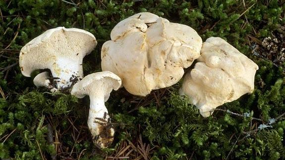
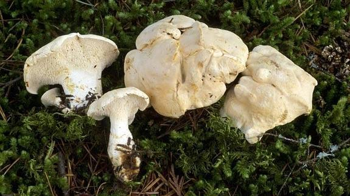
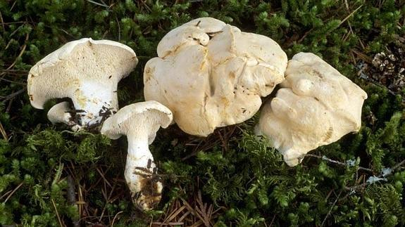
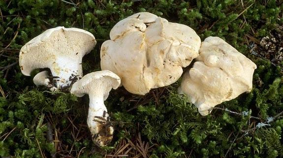

Género y especie
HYDNUM ALBIDUM
Familia
HYDNACEAE
Subclase
APHYLLOPHOROMYCETES
Orden
CANTHARELLALE
Clase
BASIDIOMYCOTINA
Descripción macroscópica
Talla pequeña, entre 3 y 8. Sombrero inicialmente convexo y luego aplanado. Cutícula de color blanco inmaculado, que al envejecer vira a tonos cremosos. Himenio formado por aguijones blancos muy apretados, ventrudos, con abundantes lamélulas. Pie hasta 3 cms. alto y 3 de grosor, cilíndrico, más bien excéntrico, a veces algo curvado, de color blanquecino. Carne blanca, gruesa y compacta. Esporas blancas, con forma elipsoidal ancha.
Confusiones
H. repandum, color crema, sale en caducifolios + pinares. H. rufescens, color rojizo.
Hábitat
Bosques mixtos. Pinares mediterráneos, rodeados de encina y coscoja.
Temporada
Otoño. Especie escasa, debe controlarse su recolección.
Cocina
A diferencia del H. REPANDUM e H. RUFESCENS, esta especie también puede consumirse de adulta. Se trata del Hydnum más apreciado gastronómicamente. Como en las otras Especies citadas, conviene raspar y eliminar los aguijones. Receta